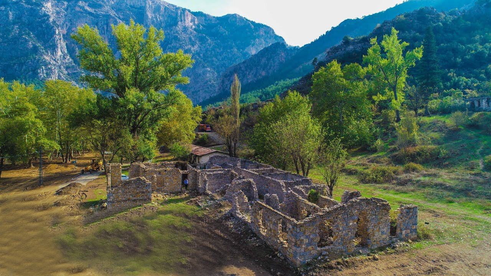
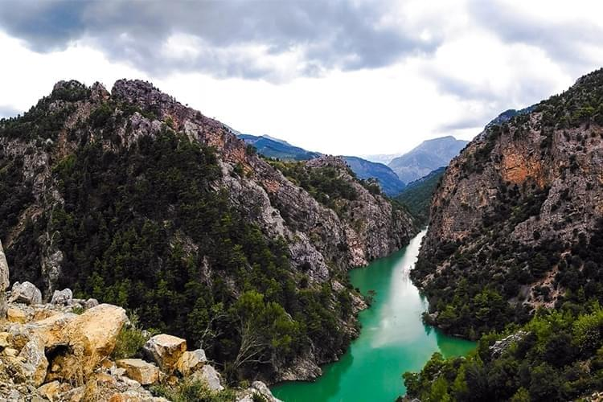
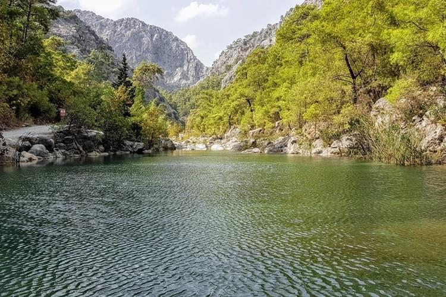

Belemedik Yaylası
Belemedik Yaylası, turistlerin yoğun ilgisini görmekle birlikte kolay bir ulaşıma sahiptir. Çakıt Çayı yakınında bulunan Belemedik Yaylası, 3 kilometre uzunluğundadır. Burada bulunan eski evler terk edilmiş olup, bölgede inşaat yasağı vardır.
-

- Sadece ahşap ev yapmak isteyenlere izin verilmektedir.
- Bölgede aynı zamanda yabani hayvanlara da rastlanmaktadır.
Göksu Nehri
Göksu nehri, Taşucu ve Silifke arasında bir delta yaparak Akdeniz'e dökülür.
-

Göynük Kanyonu
Kemer ilçesinin en popüler gezilecek yerlerinden birisi olan Göynük Kanyonu, muhteşem doğası, ağaçları, şelaleleri ve havuzları ile doğa sporu sevenler açısından muhteşem bir yerdir.
-

- Göynük Kanyonu, çeşitli kaynaklarca dünyanın en iyi 10 uzun mesafe yürüyüş rotasından biri olarak gösterilen Likya Yolu üzerinde yer alır.

Başkonuş Yaylası
Başkonuş Yaylası 1987 yılında geyik üretme istasyonu olarak kurulmuş, yıllar sonra geyikler doğaya bırakılmıştır. Çevrede çoğalan geyiklerin yaklaşık 250-300 adet civarında olduğu tahmin edilmektedir.